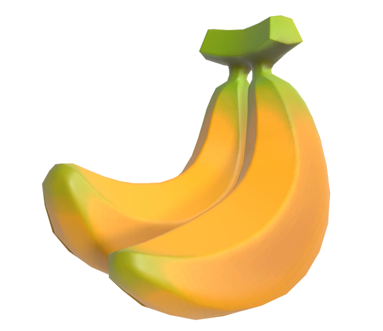

Liste de jeu incluant des bananes
Si l'envie vous prend de jouer en fonction de la présence de banane ou non
- deltarune chapter 2
- donkey kong contry (série)
- monkey ball (série)
- mario kart (série)
- super smash bros (série)
- pacman (série)
- pizza tower
- animal crossing (série)
- my friend pedro
- banana shooter
- les bananes en pyjama
- badge arcade
- benji bananas
- GTAV
- sonic all stars racing transform
- playstation all-stars battle royal
- bioshocks infinite
- wiz 'n' liz
- deadpool
- lego batman 3
- worms (série)
- metal gear solid peace walker
- mother 3
- zelda botw/totk
- fornite
